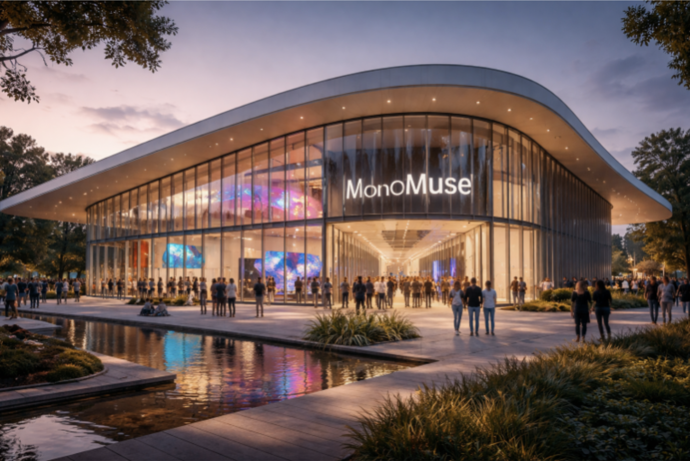

Mission Statement
MonoMuse is dedicated to exploring the evolving relationship between art, technology, and society. Our mission is to inspire curiosity and creativity by showcasing innovative exhibitions that highlight how digital tools, emerging technologies, and human imagination shape the future of artistic expression.
Who We Serve
MonoMuse welcomes visitors of all backgrounds — from curious first-timers and school groups to working artists, researchers, and lifelong learners. Our programming is designed to be accessible and engaging for everyone, regardless of prior knowledge of art or technology.
Our History
Founded in 2016, MonoMuse began as a small gallery dedicated to digital storytelling and has grown into a leading institution at the intersection of art and technology.
Milestones
- 2016: MonoMuse opens its doors with its first exhibition on digital storytelling.
- 2018: Launch of the Interactive Media Lab, allowing visitors to experiment with creative coding.
- 2021: MonoMuse achieves nonprofit status and launches its community membership program.
- 2023: Expansion of the museum space and launch of international artist collaborations.
- 2025: MonoMuse surpasses 500,000 cumulative visitors.